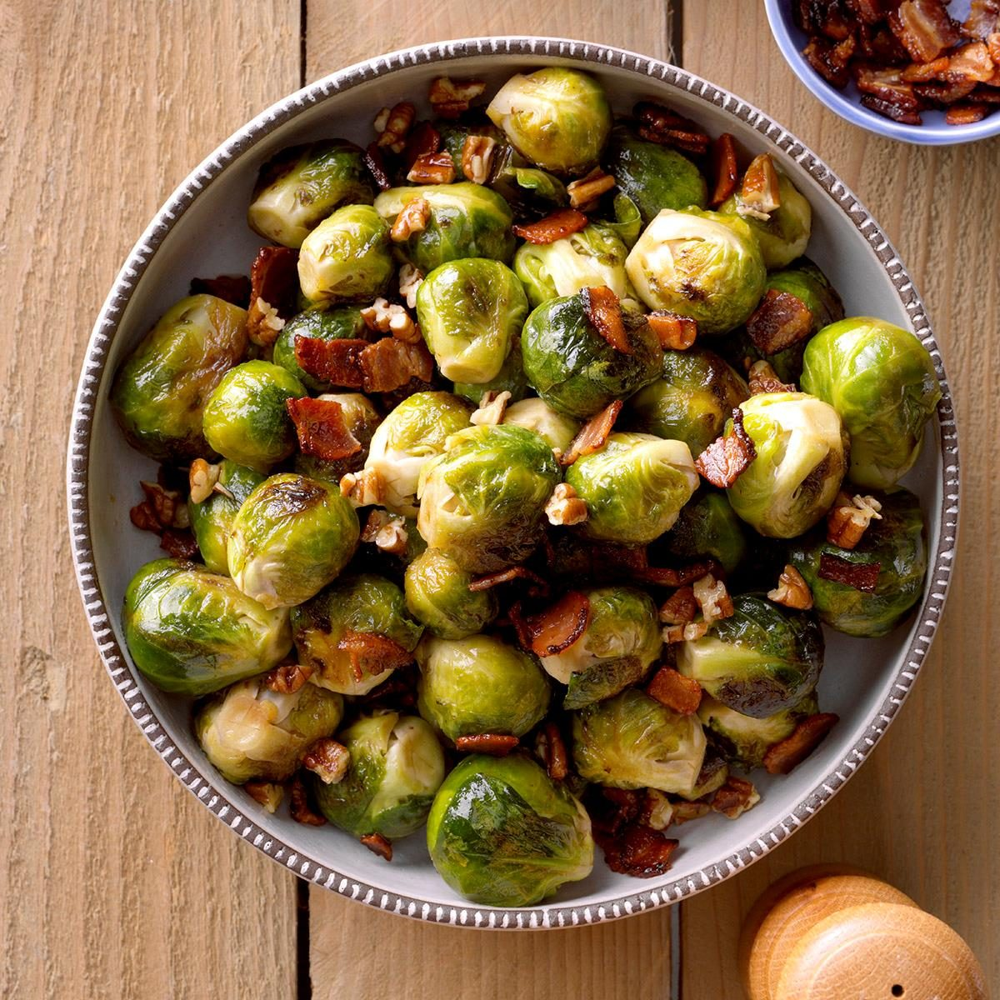

Braised Bacon Brussels Sprouts

Description
Brussels sprouts are one of my all-time favorite vegetables, and this is my favorite way to prepare them. They're crisp but tender and full of flavor.
Photo courtesy of Taste of Home.
Ingredients
- 4 slices of bacon (I've successfully used turkey bacon)
- 1 lb of Brussels sprouts, or as many as will fit in your pan
- 1 clove of garlic, sliced (or more!)
- 1/3 cup of broth or stock, e.g. chicken or vegetable
- 1 Tbs butter (2, if using turkey bacon)
- 1 Tbs balsamic vinegar (can substitute red wine vinegar or lemon juice for a different flavor, but use less!)
- salt and pepper, to taste
Steps
- Trim your Brussels sprouts as usual, cutting any large ones in half from the stem. The halved ones are particularly good this way.
- Cook your bacon in a large skillet, then set the bacon aside. Leave the grease in the pan. If you used turkey bacon, add butter or olive oil.
- Brown the Brussels sprouts (cut side down, as applicable) over medium heat, sauteeing once they've reached a nice golden brown.
- Add the garlic and cook until fragrant, about one more minute.
- Pour the broth or stock into the pan and cover. Cook for about 5 minutes. Smaller sprouts will be ready sooner.
- Remove the lid and cook away the remaining liquid. If it's evaporating very quickly and they aren't done, you can add a little more.